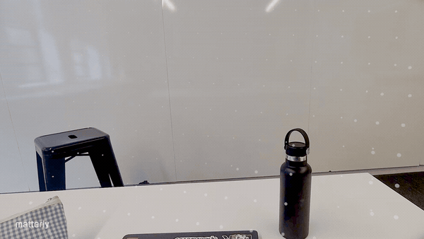
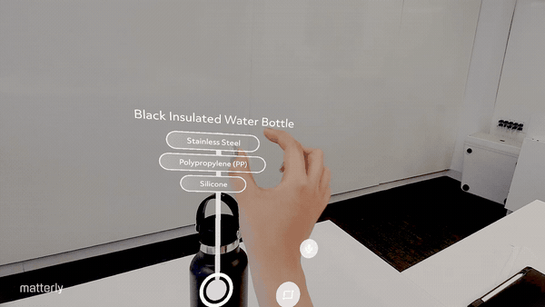
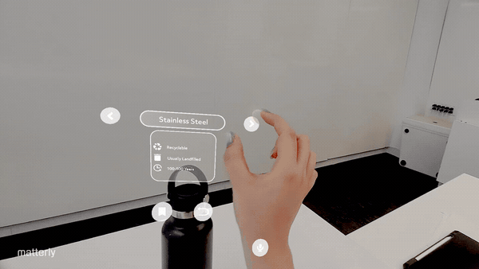
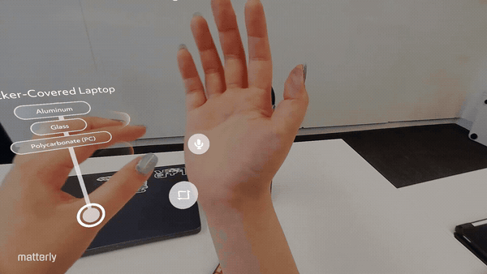
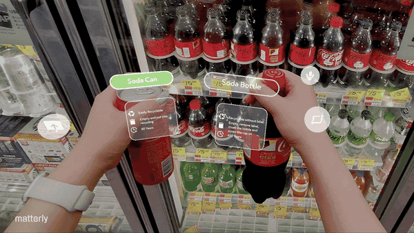
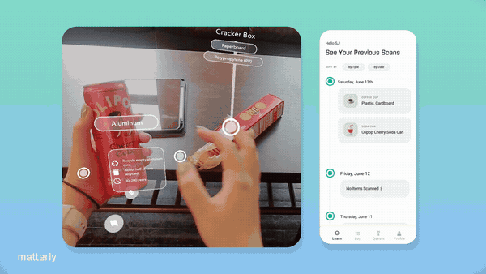

1. Scan an object
The user starts by looking at or holding an everyday object through Spectacles.
Matterly helps people understand the material impact of everyday objects through an AR learning experience. A user scans an object through Spectacles, sees its lifecycle unfold in space, asks an AI guide follow-up questions, and saves the discovery to a companion web portal.
The experience combines object recognition, material lifecycle data, spatial visual storytelling, and a lightweight object-dex system for retention.
Challenge ContextBuilt for Reality Hack at AWE 2026, a Snap-sponsored hackathon exploring how Spatial AI and Spectacles can transform learning.
Matterly responds to the prompt by turning everyday objects into spatial sustainability lessons — revealing where materials come from, what they cost, and where they really go after use.
Most sustainability education focuses on what happens after purchase, which bin to use, whether something is recyclable, or how to sort waste. But this often misses the bigger lesson: objects have a hidden material life before and after we use them.
A paper cup, water bottle, laptop, or can may feel disposable, but each object carries a story of extraction, manufacturing, water use, carbon impact, and end-of-life fate. Matterly was designed to make that invisible system visible in the moment, directly attached to the physical object.
Matterly uses Spatial AI on Spectacles to make material systems visible in context.
Instead of acting as another recycling lookup tool, Matterly reveals the full lifecycle of an object: where it came from, how it was made, how long it may last, and where it commonly ends up. This story is anchored directly to the physical object through AR, helping users build material literacy through embodied, in-situ learning.
The goal is not to make people feel guilty.
The goal is to make invisible systems understandable, memorable, and actionable.

The user starts by looking at or holding an everyday object through Spectacles.

Matterly recognises the object and maps it to material data, such as plastic type, aluminium, paper, glass, or mixed materials.

The object's hidden lifecycle appears in AR, from extraction and processing to manufacturing, use, and disposal.

The user can ask the AI guide about recycling, material impact, better alternatives, or what happens after disposal.

Users can compare objects or materials to understand which option is more reusable, recyclable, or lower-impact.

The scan is saved as a collectible card in the companion web portal, allowing users to revisit what they learned over time.
My main focus was connecting the Spectacles experience to a structured backend and companion web system.
I worked on:
This role helped bridge the live AR experience and the longer-term learning layer: Spectacles create the moment of discovery, while the web portal makes that discovery persistent.
Matterly uses a database-first architecture with AI as a flexible recognition layer.
Rather than asking AI to generate every sustainability explanation from scratch, the system stores trusted lifecycle stages, material information, and impact figures in a structured database. Gemini is used to recognise the object and fill a structured format, while the app assembles the visual experience from predefined blocks. This made the prototype more reliable for a live demo, reduced the risk of hallucinated sustainability claims, and allowed the AR visuals to stay consistent.
Object Capture → Gemini Recognition → Snap Cloud Database → Lifecycle Assembly → AR Reveal → Web Object-dex
AI was useful for recognising objects, but the educational content needed to be grounded, repeatable, and trustworthy. This architecture let us combine AI flexibility with database reliability.
The companion web portal extends Matterly beyond the moment of scanning.
While Spectacles create an immediate learning experience, the portal helps users retain what they discovered. Each scanned object becomes a card in an object-dex, holding its material breakdown, lifecycle story, impact data, and end-of-life information.
The aim was to make sustainability learning feel collectible and encouraging rather than guilt-driven. The product brief describes the portal as an object-dex where each scanned object unlocks an illustrated card holding its story, impact, and fate.
We chose to store lifecycle and impact data in a structured database, using AI mainly for recognition and structured interpretation. This reduced hallucination risk and made the experience more reliable.
Matterly is not just a recycling lookup app. The key value is that information appears in context, anchored to the real object, so the user learns through the thing they are already holding or seeing.
The experience avoids guilt-based messaging. Instead of saying “you failed” or “you saved X litres,” Matterly focuses on curiosity, discovery, and better choices.
The Spectacles experience creates the moment of surprise; the web portal helps users remember, compare, and build a collection over time.
Future development could include: